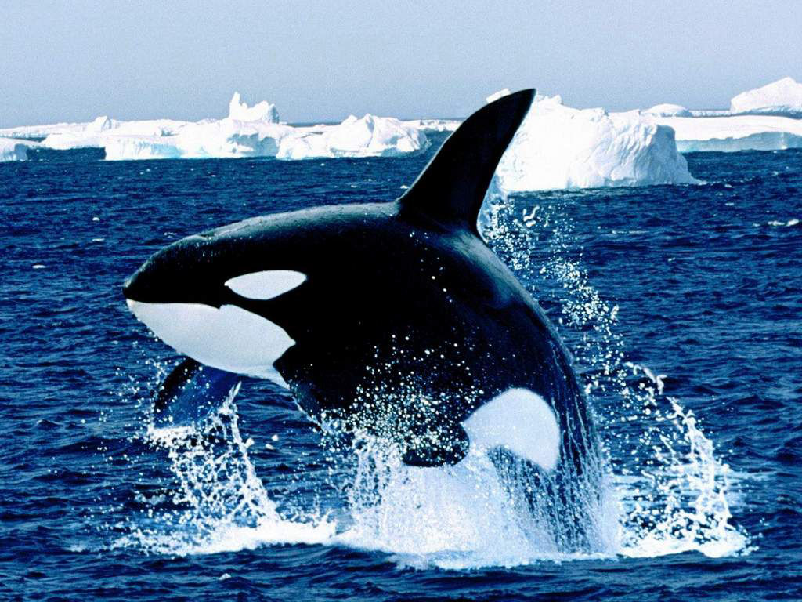

Rayap
Rayap memakan kayu untuk menghasilkan enzim selulose

Mamalia
Paus menyerap 3.350 liter oksigen untuk bertahan di kedalaman laut
Bunglon berubah warna sesuai lingkungannya
Cicak memutuskan ekornya saat terancam
Beruang tidur saat musim dingin
Kekelawar melakukan estivasi untu berlindung dari panas.
Rayap memakan kayu untuk menghasilkan enzim selulose
Paus menyerap 3.350 liter oksigen untuk bertahan di kedalaman laut
This site was designed with Mobirise template